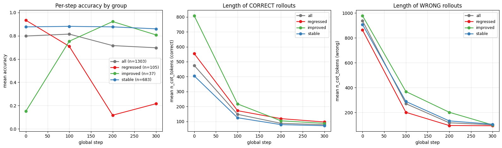
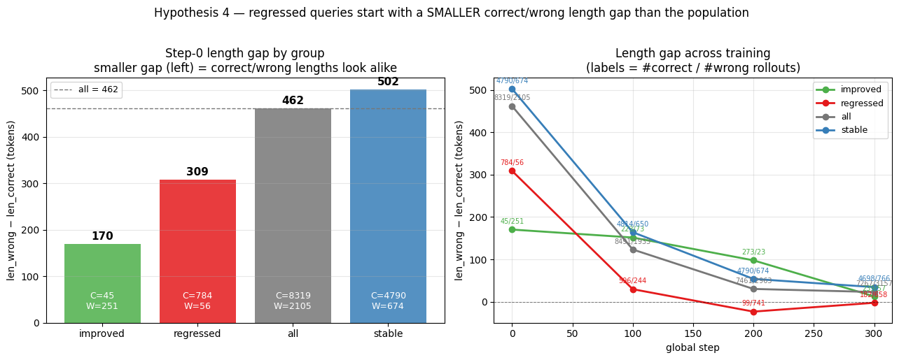
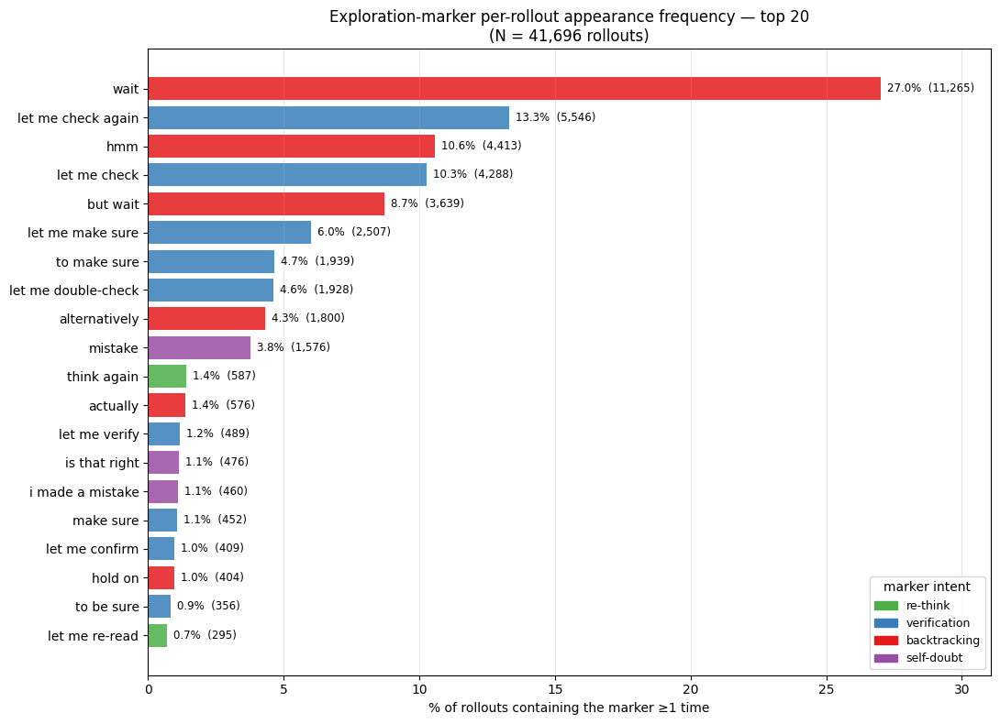
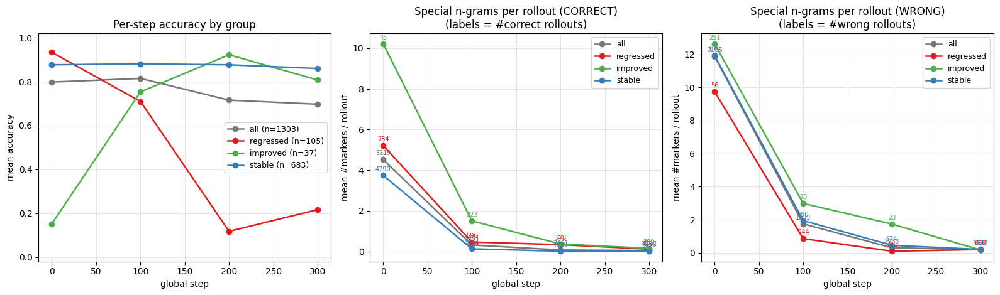
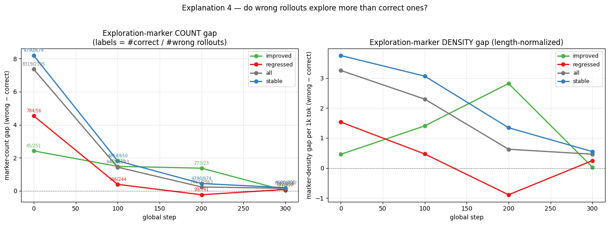

Qwen3-1.7B · GSM8K val (1303 queries × 8 rollouts) · GRPO + InvLength reward · 300 steps
If you know what the exit looks like, being lost in a maze makes you keep searching. If you do not know what the exit looks like, you may walk into a dead end and think you are done.
A long chain-of-thought is the model wandering the maze. When it has a good sense of the exit, wrong rollouts run long — it knows it has not arrived — while correct rollouts are short because it recognizes the answer. When that sense is missing, wrong answers can be short too: the model mistakes a dead end for the exit. We report analysis on GRPO with extra rewards on shortness.
| Configuration | Acc @0 | Acc @300 | Δ Acc | Len @0 | Len @300 | Δ Len |
|---|---|---|---|---|---|---|
| GRPO + InvLength (this run) | 79.8% | 69.7% | −10.1 pp | 569 | 85 | −85% |
| GRPO baseline | 79.8% | 83.9% | +4.1 pp | 569 | 478 | −16% |

| Step | Correct len | Wrong len | Gap (wrong − correct) |
|---|---|---|---|
| 0 | 475 | 937 | +462 (≈2×) |
| 100 | 148 | 271 | +123 |
| 200 | 88 | 118 | +30 |
| 300 | 78 | 101 | +23 |
The model stops when it thinks it has reached the exit, and keeps walking when it has not. At step 0 a wrong answer takes ≈2× the tokens of a correct one: the model can still tell it is lost, so it searches longer. The size of this gap is its sense of the exit — and it is exactly what length regularization puts under pressure.




The wrong−correct gap — in length and in exploration n-grams — is the model’s sense of the exit made measurable:
Harmful compression is not about how short the path gets, but whether the model can still recognize the exit. Keep that gap alive — use it to gate the length penalty — and we get compression without the dead ends.